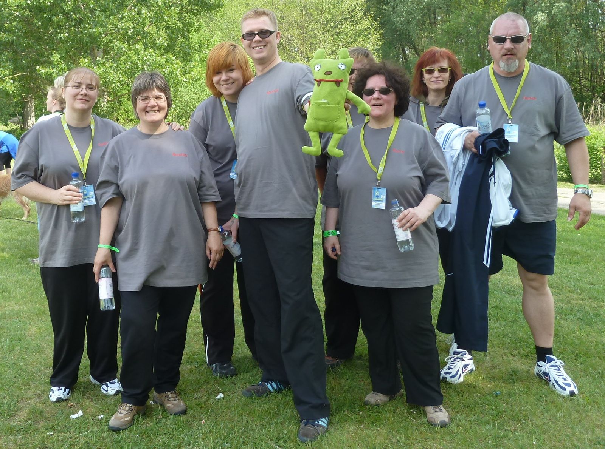
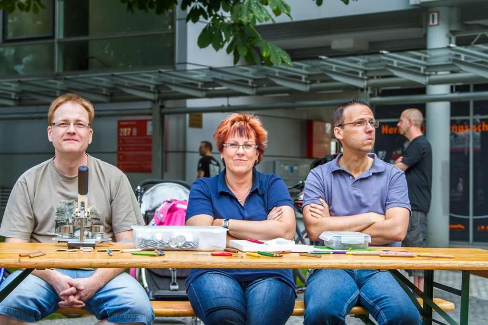
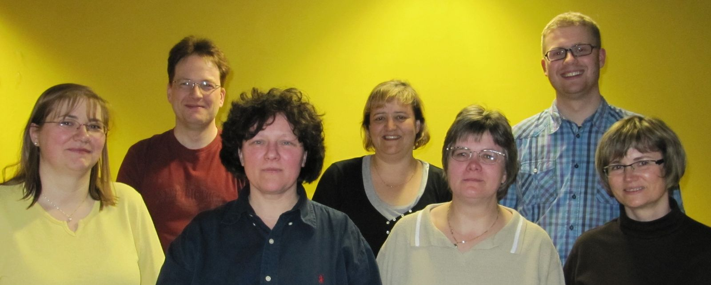

Der Verein hinter der Musik
Gemeinsam mit unseren jungen und junggebliebenen Musikern engagieren sich viele Menschen, die uns und unsere Musik mögen.
Vorstand & Vereinsdaten
An alle Beteiligten und Unterstützer des Freundeskreis Tastonettis e. V. ein herzliches Dankeschön!
- Name
- Freundeskreis Tastonettis e. V.
- Anschrift
- Stolzenfelsstraße 4, 10318 Berlin
- Vereinsregister
- Amtsgericht Charlottenburg, VR 30637 B
- Gemeinnützigkeit
- Anerkannt durch das Finanzamt für Körperschaften I, St.-Nr.: 27 / 653 / 56313
- Bank
- Deutsche Skatbank
IBAN: DE71 8306 5408 0004 0019 58
BIC: GENODEF1SLR - tastonettis@gmail.com
Werden Sie Teil unserer Gemeinschaft
Gemeinsam mit unseren jungen und junggebliebenen Musikern engagieren sich im Verein viele Menschen, die uns und unsere Musik mögen und sich in unserer Gemeinschaft wohlfühlen. Sie betreuen alle Aktivitäten wie Konzerte, Konzertreisen und Veranstaltungen, übernehmen die ganze organisatorische Arbeit im Hintergrund und stehen uns jederzeit mit Rat und Tat zur Verfügung.
Ein zur rechten Zeit geklebtes Pflaster, ein Schnappschuss vom Konzert, die Fütterung hungriger Musiker – auf all das ist bei unseren Mitgliedern immer Verlass.
Wenn Sie uns unterstützen möchten, werden Sie doch einfach Mitglied im Freundeskreis Tastonettis e. V.




Highlights des Vereins
Alle Vereinsmitglieder haben mit Freude und großem Einsatz viele Aktivitäten rund um das Orchester, wie zum Beispiel Mittelbeschaffung, Organisation und Planung von Konzerten und -reisen der Tastonettis begleitet. Hier einige Highlights, die ohne Akkordeon stattfanden:
- Teilnahme an einem Wettbewerb von Bildungsspender – und wir haben die Ape gewonnen!
- Teilnahme an der 105'5 Spreeradio Vereinsmeisterschaft mit einem tollen Platz 20 von 50
- Anerkennung als „gemeinnützig“ beim zuständigen Finanzamt für Körperschaften I unter der Steuer-Nr. 27 / 653 / 56313
- Eintragung in das Vereinsregister des Amtsgerichts Charlottenburg unter der Nummer VR 30637 B
- Teilnahme an der 105'5 Spreeradio Vereinsmeisterschaft – wir haben einen hervorragenden Platz 17 erreicht
- Gründung des Vereins „Freundeskreis Tastonettis e. V.“




Menschen, die uns besonders am Herzen liegen
Daniel
Busfahrer, bringt uns an die entlegensten Orte und überrascht uns auch mal morgens um sieben mit leckeren Eierkuchen.
Lothar
Mit Herz und Kopf immer für und bei uns, absoluter Akkordeonliebhaber, obwohl er selbst nie in die Tasten haut.
Moni
Ehemaliges Orchestermitglied, die mit ihrer Sicht auf die Dinge mehr bewegt hat, als wir bemerkt hatten. Du bist nicht mehr da, wo Du warst, aber Du bist überall, wo wir sind.
Greifen Sie uns unter die Akkordeons!
Wir sind sehr dankbar, dass wir immer wieder Sponsoren gewinnen können, die unseren Verein unterstützen! Wenn auch Sie uns mit einer Spende unter die Akkordeons greifen möchten, nutzen Sie hierfür bitte folgendes Bankkonto:
IBAN: DE71 8306 5408 0004 0019 58
BIC: GENODEF1SLR
Bank: Deutsche Skatbank
Durch die anerkannte Gemeinnützigkeit sind Spenden steuerlich absetzbar. Eine Spendenbescheinigung wird Ihnen nach Erhalt der Spende zugesandt. Bitte geben Sie bei der Überweisung Ihre Adresse an oder senden Sie uns diese per E-Mail an tastonettis@gmail.com.
Sie können uns außerdem ohne Mehrkosten beim Online-Einkauf über Bildungsspender unterstützen. Auf diesem Weg sind seit unserer Anmeldung schon fast 9.000 € für den Verein zusammengekommen – vielen Dank an alle, die mitmachen!
Was erwartet Sponsoren?
- Erwähnung als Sponsor auf unserer Website und in unserer Facebook-Präsenz (auf Wunsch auch anonym möglich)
- Link auf Ihre eigene Homepage, auch Bannerwerbung möglich
- Logo auf Orchesterkleidung und Notenständerfahne
Wir bedanken uns herzlich bei folgenden Firmen und Personen für ihre großzügige Unterstützung:
Fragen zum Verein?
Ob Mitgliedschaft, Spende oder Sponsoring – wir freuen uns auf Ihre Nachricht.